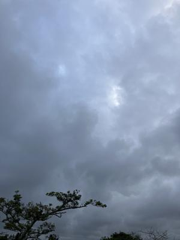
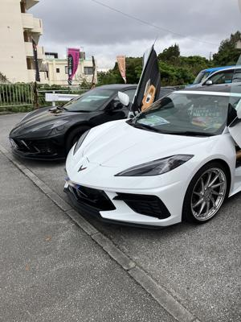
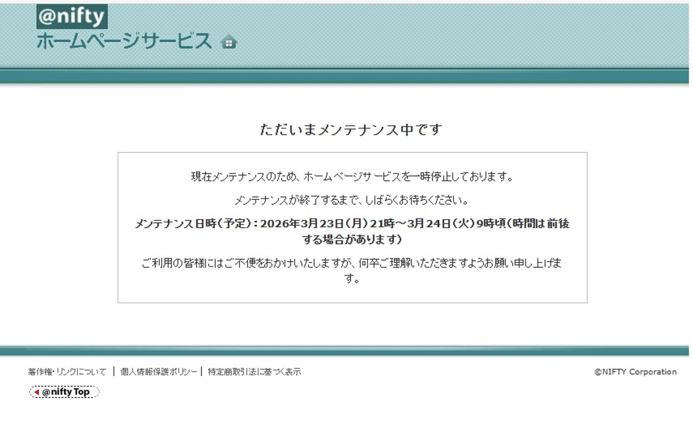

うるがいの話 ある日
最新: 腰痛です【うるがいの話 ある日】とは 一日だけのプログです
『うるがいの話』の最新一日だけのプログで、通信料が少なく経済的だ。カニの画像をクリックすると全ての日付が載る『うるがいの話』サイトを表示します
|
|
【うるがいの話】 うるがい(ｳﾙｶﾞｲ urugai)とは、『もずくがに』の名前でとても大きくなります。 |
|---|---|
|
|
【カミマヤーの話】 猫のことを方言でマヤーといいます。カミマヤー（kamimayaa）とは、神の猫のことです。 |
|
【たながぁの音楽】 たながぁ（ﾀﾅｶﾞｰ tanagaa）とは手長えびのことで、何種類かあり大きいのは車 エビぐらいになります。 |

|
【ぶながぁの話】 ぶながぁ(ﾌﾞﾅｶﾞｰ bunagaa)とは、赤い髪の毛、赤い身体、そして身長は１ｍ２０ｃｍ ぐらい、川の蟹を食べているの目撃された。場所は沖縄県国頭郡大宜味村のと ある村僕の隣近所に住んでいる爺さんから、聞いた話です。 |
|
|
【ギーマの話】 ギーマ(giima)とは、山原の里山に咲くスズランに似た、 花を付けます。実は食べられます、 気が付くと口の周りが紫になっています。 |
2026年03月24日 (火）腰痛です
15:03

きのうの昼前、駐車場で屈（かか）んだあと少し、腰に違和感が
。夕方には、風呂上がりに右の臀部にシップを貼りました。今日
も、朝ズボンを、屈んで着けるのがきつかったです。さて、前回
はとメモをみる。おお、あと数日は腰痛が続きます。
2025.12.19 右の腰が痛い
軽い痛み、
12.23 痛み引く
中国ドラマ「墨雨雲間～美しき復讐～」を見てます。婉寧公主（
妹）が、成王（兄）にお兄さんと、中国語（哥哥 (gē ge)」でし
ゃべるのですが、なんと耳に聞こえました。
そして沈玉容（悪役の男性）が、沈玉容（主人公の女性）を後ろ
から羽交い締めを、麻酔がはいった布で口元を抑え眠らせるシー
ン。小学生の頃、両耳に大豆の豆を突っ込み、辺士名の町にあっ
た病院で、看護婦さんに布で口元を抑えられて意識が無くなった
こを思い出しました。ん、私の難聴は、その出来事が影響してい
るかも知れないとフと考えました。このドラマは、今日の放送で
終わり、中国語の発音の勉強になりました。
売れるのでしょうか、高級車が２台並んでいる。

９時前、８時４７分ホームページを開こうととしたら。

nifty大丈夫でしょうか・・・・・。